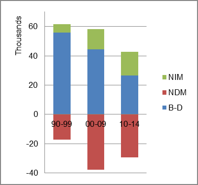
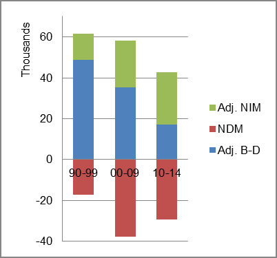

The foreign-born (FB) population increased from 396,614 in 1960 to 469,748 in 2010. That was an increase of 18.4 percent. The foreign-born share was unchanged from 4.1 percent in 1960 and in 2010.
The share of the overall population that was native-born (NB) increased by 18.9 percent.
Ohio: Population 1960-2010
The first chart below shows the three population change factors for three periods adjusted for annual average amounts. Domestic migration (NDM) was consistently negative and B-D was consistently the major component of population increase.
The second chart shows the same data but with an adjustment to reflect births to immigrants shifted to NIM. In it, NIM rose to a majority of the overall population increase in the most recent period.
Ohio: Sources of Population Change 1990-2014 Ohio: Sources of Population Change (Adjusted) 1990-2014  
B-D NDM NIM B-D NDM NIM 90-'99 90.4% neg. 9.6% 90-'99 78.9% neg. 21.1% 00-'09 76.4% neg. 23.6% 00-'09 61.0% neg. 39.0% 10-'14 61.8% neg. 38.2% 10-'14 40.3% neg. 59.7%